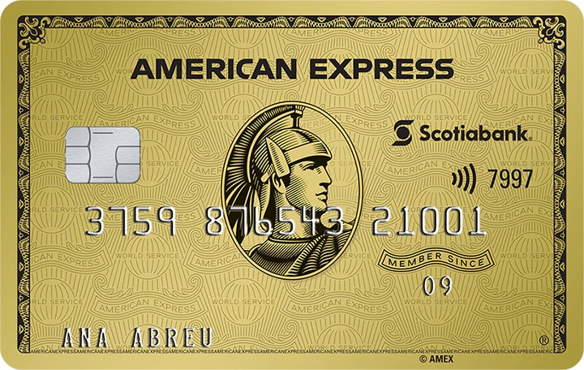
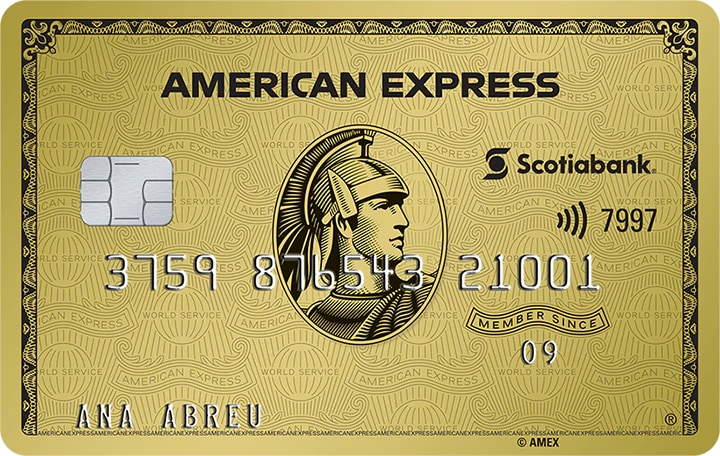

Proceso de Compra en 3 Pasos
Completa la información para finalizar tu compra
Paso 1: Carro y Datos de Usuario
Nota: Este campo se ocultará una vez ingresada la información.
Paso 2: Información de Envío
Ingresa tu dirección para ver las opciones de entrega y retiro.
 
